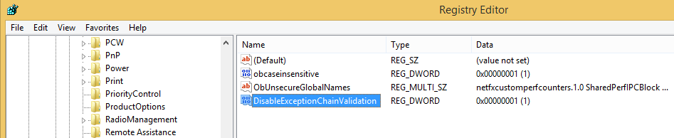

Disable SEHOP
Turning Off SEHOPSEHOP blocks this attack. It's not turned on by default on Windows 7, but it is on by default on Windows 2008 Server.
Click Start, type regedit, wait for the search process to find regedit.exe, and then press Enter.
In Regedit, navigate to this registry subkey, as shown below.
HKEY_LOCAL_MACHINE\SYSTEM\CurrentControlSet\Control\Session Manager\kernel
In the right pane of Regedit, double-click DisableExceptionChainValidation
Change the value of the DisableExceptionChainValidation registry entry to 1 as shown below. Then click OK.
Restart your Windows machine. If it's the Windows Server 2008 machine from my site, it will take a few minutes to restart, and then make you wait 15 seconds more because it's not activated.
